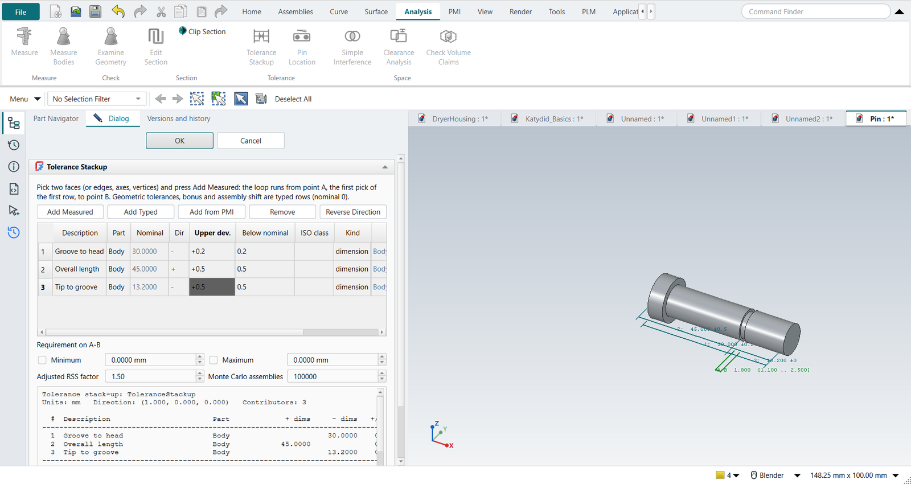
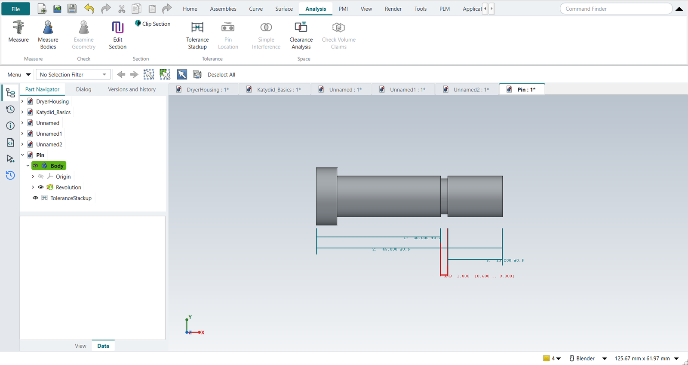

Tutorial S: Tolerance stack-up of a grooved pin
| Book |
Bryan R. Fischer, Mechanical Tolerance Stackup and Analysis, 2nd ed., Example 7.1 (worst case, fig. 7.11 and 7.12) and Example 8.1 (statistical, fig. 8.16 and 8.17) |
| You learn |
Analysis › Tolerance Stackup, measured contributors, the stack direction, worst case against RSS, a requirement, fewer contributors, associativity |
| Sizes |
The book’s axial sizes: 45 ±0.5 overall, 30 ±0.2 from the head end to the groove, 13.2 ±0.5 from the tip to the groove, so a groove 1.8 wide. Its diameters are not given: the pin here has a Ø14 × 5 head, a Ø10 shank and a Ø8.6 groove root. |
The question is the book’s: how wide can the groove be, at least and at most, when the pin is made to these three dimensions?
Step by step
1. The pin
Ctrl+N, Revolve with nothing selected, the XY plane, and the half section with Profile (Z).
Dimension it fully; name the groove’s width GrooveWidth.
Ctrl+Q continues into the Revolve dialog: the X axis, 360°, OK.
2. The loop
Analysis › Tolerance Stackup. Pick the groove’s side towards the head (point A) and the head’s end face, then Add Measured: 30.000, against the stack direction. Then the head end and the tip (45.000, +), and the tip and the groove’s other side (point B: 13.200, −). The stack direction is the outward normal of A, across the groove.
Type the descriptions and the tolerances into the table: ±0.2, ±0.5, ±0.5.

| Fischer | NX-Style | Min to max | |
|---|---|---|---|
Nominal |
1.8 |
1.8000 |
|
Worst case |
±1.2 |
±1.2000 |
0.6000 to 3.0000 |
RSS |
±0.74 |
±0.7348 |
1.0652 to 2.5348 |
Adjusted RSS (1.5 × RSS) |
±1.1 |
±1.1023 |
0.6977 to 2.9023 |
The book rounds; the numbers are the same.
3. A requirement
The groove has to take a DIN 471 retaining ring for a Ø10 shaft, which needs a groove at least 1.1 wide. Tick Minimum and type 1.1. Worst case (0.6) and adjusted RSS (0.70) fail; the Monte Carlo run of 100 000 pins finds about 2 000 per million too narrow. With three contributors the report recommends the worst-case result, as Fischer does.
OK puts the report in the Information window; the loop stays in the graphics window beside the pin, numbered as in the table.

4. Fewer contributors
Fischer’s remedy is not tighter tolerances but a better dimensioning scheme: dimension what the function needs, with the fewest dimensions in the loop. Select the stack-up and click Tolerance Stackup to edit it, Remove the three rows, and add the groove’s width itself: A to B, ±0.1. The worst case is now 1.7 to 1.9 and passes.
The replay
| # | In the book (NX) | In FreeCAD NX-Style | Result | Notes |
|---|---|---|---|---|
S1 |
File > New (Ctrl+N), Model template |
Ctrl+N |
same |
|
S2 |
Revolve, nothing selected |
ribbon 'Home › Feature > Revolve' |
same |
|
S3 |
Sketch on the XY plane |
plane row + MB2 |
same |
XY-plane (Base plane) |
S4 |
Profile (Z): the pin’s half section, 10 lines, MB2 |
Z key + 11 MB1 clicks + MB2 |
same |
tool True; 10 curves; ended True |
S5 |
Rapid Dimension: 45 overall, groove 30 from the head and 1.8 wide; Ø14 head, Ø10 shank, Ø8.6 groove root |
values applied (the groove width named GrooveWidth) |
differs |
solver 0 (0 = fully constrained) |
S6 |
Revolve about the X axis, 360°, OK |
axis 'Base X-axis', MB2 = OK |
same |
volume 3874.5 mm^3, expected 3874.5; 1 solid(s) |
S7 |
Analysis > Tolerance Stackup |
ribbon 'Analysis › Tolerance > Tolerance Stackup' |
differs |
NXStyle’s own command: FreeCAD has no stack-up tool (NX’s is the separate Tolerance Stackup Validation) |
S8 |
Pick groove side A to the head end, Add Measured |
two MB1 picks + 'Add Measured' |
same |
measured -30.000 mm along (1.0, 0.0, 0.0) |
S9 |
Pick head end to tip, Add Measured |
two MB1 picks + 'Add Measured' |
same |
measured +45.000 mm along (1.0, 0.0, 0.0) |
S10 |
Pick tip to groove side B, Add Measured |
two MB1 picks + 'Add Measured' |
same |
measured -13.200 mm along (1.0, 0.0, 0.0) |
S11 |
Tolerances ±0.2, ±0.5, ±0.5: worst case 0.6 to 3.0, RSS ±0.74, adjusted RSS ±1.1 (0.7 to 2.9) |
typed into the table’s cells |
same |
nominal 1.8000; worst case 0.6000 to 3.0000; RSS ±0.7348; adjusted 0.6977 to 2.9023: Fischer’s figures 7.12 and 8.17 |
S12 |
Requirement: the groove takes a DIN 471 ring for a Ø10 shaft, so A-B >= 1.1 |
Minimum ticked, 1.1 typed |
differs |
verdict: worst case FAILS, adjusted RSS FAILS; Monte Carlo 2,230 ppm out (100000 assemblies). The book states no requirement: this one shows what the numbers mean |
S13 |
OK: the stack-up report |
MB2 = OK; the report in the Information window |
same |
the stack-up stays in the Part Navigator and recomputes with the part |
S14 |
Change the dimensioning: the groove’s width dimensioned directly, 1.8 ±0.1 |
three rows removed, A to B added, ±0.1 typed |
differs |
worst case 1.700 to 1.900; worst case OK, adjusted RSS OK. One contributor instead of three (Fischer: dimension what the function needs, with the fewest dimensions in the loop) |
S15 |
Design change: the groove widened to 2.0 in the model |
the sketch’s GrooveWidth = 2.0 |
same |
the stack-up follows: nominal 2.000, worst case 1.900 to 2.100 (it measures the faces, not a copy of the numbers) |
S16 |
The pin and its stack-up loop in the graphics window |
render of the graphics window |
same |
10.9% of the view shows the part |
| Result | Means |
|---|---|
same |
The book’s NX steps work as written. |
differs |
It works, but the FreeCAD way is different; the notes say how. |
limit |
The book’s way fails in FreeCAD itself; a workaround follows in the next steps. |
missing |
FreeCAD has no such function; a stand-in follows. |
skipped |
Not replayed; the notes give the reason. |
FAILED |
Did not work. |
What differs from NX
-
NX’s stack-up tool (Tolerance Stackup Validation) is a separate product working from PMI; NX-Style’s measures the model directly, takes PMI too (tutorial T), and is a feature of the part.
-
The dimensions are set through FreeCAD’s API, the equivalent of typing them into Rapid Dimension.